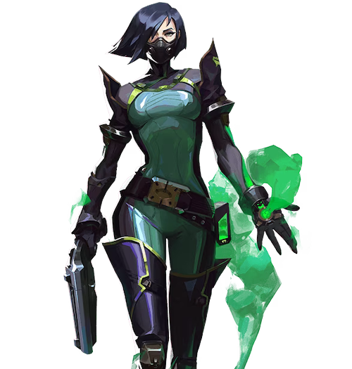
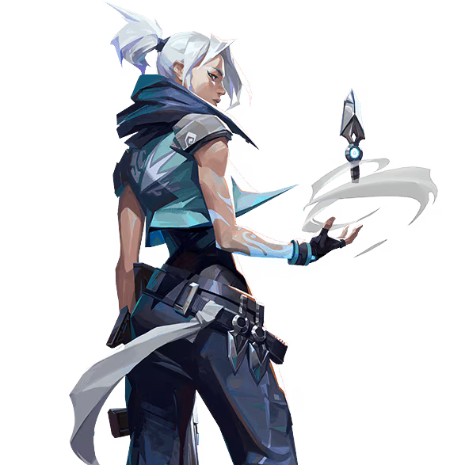

ブリーズのマップ
情報・特徴
ブリーズは非常に広大なマップ構造をしていることに加えて、中央シュートやAスイッチといったギミック通路が存在しているのが特徴です。
また、マップだけでなくサイトが設置されているエリアも非常に広く、様々なポイントから射線を通すことができてしまうのでスモークやカーテンなどの射線を塞ぐアビリティの使い方が重要になるマップでもあります。
全体マップ・マップの詳細
ブリーズのおすすめ構成
ブリーズは通路やサイトだけでなくマップそのものが広い構造をしており、様々なポイントから射線が通りやすくなっているのが特徴的です。
特にミッドが開けた地形になっている上に、ミッド以外のルートではサイト間の移動が非常に手間となるため、索敵に優れた「ソーヴァ」と足止め性能が高い「ヴァイパー」は非常に重要な役割をになっています。
またブリーズはサイトや敵陣地への侵入ルートが多く、プレイヤーのみで全てのルートを監視・防衛することは困難であるため設置系の感知アビリティを持つ「キルジョイ」や「サイファー」の有無で戦局の安定性が大きく変化するので覚えておくと良いでしょう。
| おすすめチーム構成 | ||||
|---|---|---|---|---|
|  ヴァイパー |
 ソーヴァ |
 ゲッコー |
 サイファー |
 ジェット |
ブリーズの基本的な攻め方
Aサイト側の立ち回り
ブリーズのAサイト側を攻める場合は、ピークやエントリーの起点となるAホール・Aケイヴ・中央ウッドドアの3ヶ所を確保することが重要になります。
特にAホールは防衛側プレイヤーの「待ち」の危険性こそあるものの、確保できればAスイッチやAブリッジからサイト内への射線を通すことができるようになるので、メリットが非常に大きいエリアとなっています。
Aサイトはあらゆるポイントから射線が通る非常に開けたエリアなので、その中でも対処の難しいAスイッチとAブリッジからの射線をスモークなどで塞ぐと戦闘が非常に楽になります。
なお、スモークの射程距離が長い「オーメン」や「アストラ」であればピンポイントで設置できますが、「ヴァイパー」の「トキシックスクリーン」でも両方を同時に塞ぐことができるので覚えておきましょう。
Bサイト側の立ち回り
ブリーズのBサイト側を攻める場合は、ピークやエントリーの起点となるBメイン・Bエルボーの2ヶ所を確保することが重要になります。
Aサイトと比べて侵攻ルートが限られているため奇襲や不意打ちを狙うことが非常に難しいのですが、ブリーズ性質上、Aサイトの防衛のために人数を割くことが多いのでフラッシュを活用して一気に押し込むことを意識すると良いでしょう。
Aサイトに比べて防衛人数が少ない傾向にあるのは確かですが、ラッシュを読まれて強固な防衛陣形を組まれていると突破が非常に困難になるため事前索敵が重要です。
「ソーヴァ」の「リコンボルト」や「KAY/O」の「ゼロ/ポイント」で配置人数を割り出してから本格的な行動に移すと良いでしょう。
ブリーズの基本的な守り方

Aサイト側の立ち回り
ブリーズのAサイトを守る場合は、攻撃側のエントリーやピークの起点となるAホール・Aケイヴ・中央ウッドドアの3ヶ所を抑えることが重要になります。
特に、Aスイッチに防衛側プレイヤーを1人置いておけば、Aホールを警戒すると同時にAケイヴへのカバーも行えるポジションなので必ず確保しておくのがおすすめです。
敵にスパイクを設置されてしまうと、Aサイトの射線を通せるポイントが多いメリットがそのままデメリットに変わってしまうため、攻撃的な姿勢は控えて遅延戦術やカウンターを中心に動くよう意識しましょう。
Bサイト側の立ち回り
ブリーズのBサイトを守る場合は、基本的にBメイン・Bエルボーの2ヶ所を抑えることが重要になります。
特にBエルボーはBトンネルを目標として抜けてくる敵を抑えられるだけでなく、戦闘音や足音に応じて中央ネストのカバーや中央ウッドドアを侵攻する敵への不意打ちなど臨機応変に対応することが可能です。
また、「ジェット」や「チェンバー」など機動力のあるエージェントならばAサイトへのローテートも容易なので、「オペレーター」を所持している状況でなければ優先的にポジショニングしておくと良いでしょう。